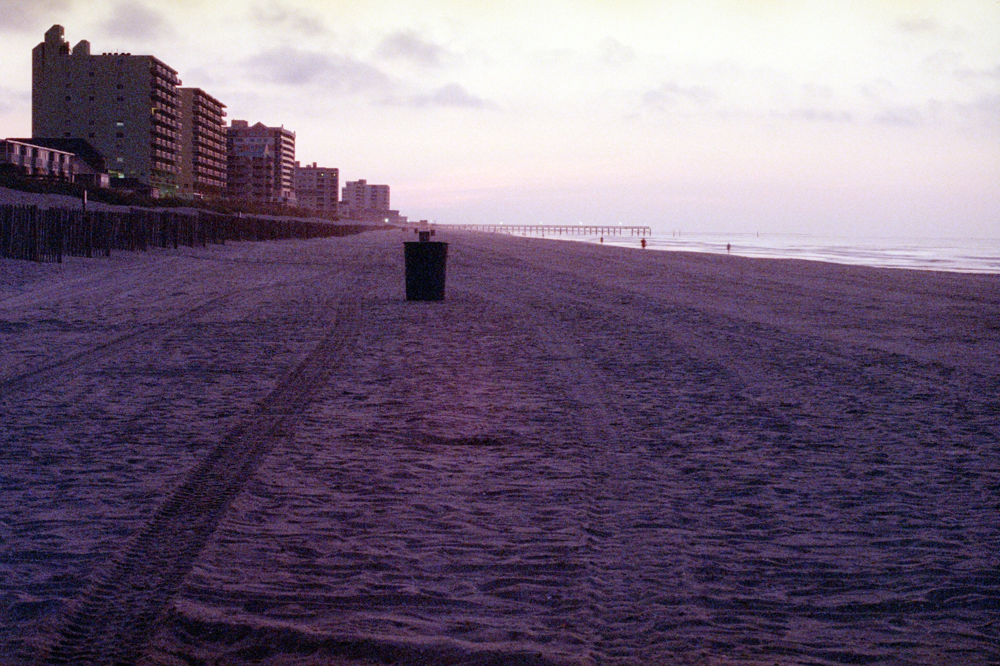

FlipMyFilm
Restore your inverted film laboratory scans to their proper orientation. Select individual frame captures or entire scan directories to apply an exact 180-degree rotation.

Restore your inverted film laboratory scans to their proper orientation. Select individual frame captures or entire scan directories to apply an exact 180-degree rotation.